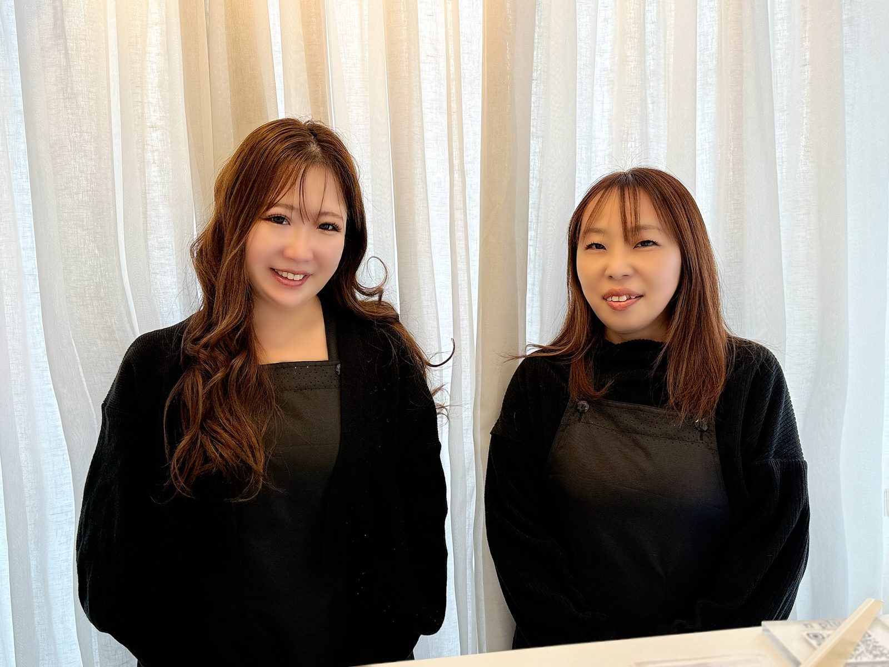

【2025年の締めくくりに。ご挨拶とお知らせ】🎍✨
こんにちは。アトリエ・ナインの菅野です。
いよいよ12月も後半。
サロンも年末モードに突入し、連日たくさんのご予約をいただいております。
ありがとうございます🙏
2025年、私たちにとっては節目の10周年の年でもありました。
◼︎2025年を振り返って
今年は…
・9月にhair atelier nineが10周年を迎え
・11月にはeyelash部門「n plus」が独立オープン
・新しい仲間たちも増え、組織としても大きく成長した1年となりました🌱
サロンを信じて通い続けてくださるお客さま、
日々のサロンワークを支えてくれるスタッフのみんな、
そして地域や取引先など、周囲の支えあってのこの1年だったと実感しています。
本当に、ありがとうございました。
◼︎年末年始の営業について📅
2025年の営業は【12月30日】までとなります。
年始は【2026年1月4日】より通常営業を再開いたします。
12月は、早い段階からご予約が一杯となりで感謝の気持ちでいっぱいです✂️
年末間に合わなかったお客様、年始にお待ちしております。
◼︎現在の求人状況📢
求人は現在、予定を超える問い合わせのため、2026年は
アシスタントもしくは新卒採用の方に限定させていただいております。
🟩【森合店】
・アシスタント
1名のみ 募集しております◎
（決まり次第終了。しばらくは募集予定ありません）
📲 サロン見学やご相談はLINEからもお気軽にどうぞ！
求人概要なども個別でご案内可能です◎
＼ まずは「ちょっと気になる」でOKです！／
スタッフや働き方の雰囲気が分かる、見学のみも大歓迎です👀
◼︎2026年に向けて
来年は“次の10年”の第一歩。
サロンも会社もまだまだ整えていきたいことがたくさんありますが、
「働く人の幸せ」も「通うお客様の満足」も、
どちらも大事にしながら、一歩一歩進んでいきたいと思っています。
私自身も、美容師としての手を止めず、経営者としての学びも止めず、
スタッフが輝ける環境を整えていくつもりです。
少し早いのですが、今年も1年本当にありがとうございました！🙇♂️
来年もどうぞよろしくお願いいたします✨
皆さま、良いお年をお迎えください🎍
それではまた。
株式会社 アトリエ・ナイン
代表 菅野 勇紀
📸 Instagram ：@atelier_nine.kanno
🧵 Threads ：@atelier_nine.kanno
2015年9月、福島県福島市に《hair atelier nine》をオープン。
福島市内で【ヘッドスパサロン】2店舗、【アイラッシュ専門店】n plus を展開中。
完全週休2日／残業なし／サロンワーク6〜8時間。
女性が安心して働ける職場づくりをこれからも進めていきます。


